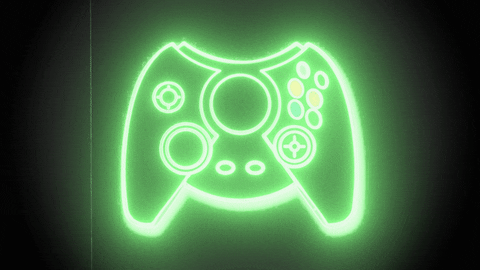
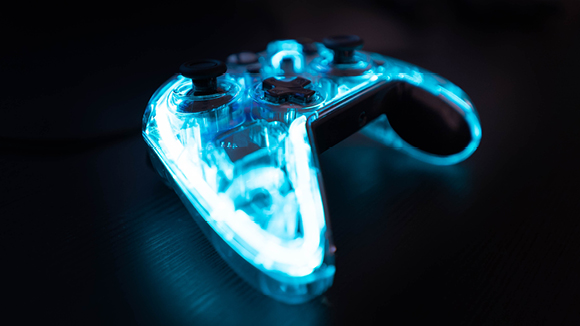

|
Mungkin yang terlintas dalam pikiran kita saat mendengar kata hobi main game adalah tindakan yang buang-buang waktu, percuma, tidak produktif dan tidak memiliki masa depan. Tak jarang ketika kita bermain game, orang tua pun berang melihatnya.
Tapi itu dulu. Sekarang, masa depan gaming sudah menunjukkan tampangnya. Olahraga elektronik atau yang lebih dikenal dengan esports, sudah mulai mewabah dan ditanggapi serius di Indonesia. Esports adalah istilah yang digunakan untuk membedakan competitive gaming modern yang memiliki ekosistem terintegrasi seperti infrastruktur, konferensi, tim profesional, liga, dan sponsor, dari jenis video game lainnya.
|

|
Esports sendiri dipandang menguntungkan dari segi bisnis. Tidak hanya peserta pertandingannya, tetapi juga sponsor dan panitia penyelenggara juga mendapatkan uang dengan nominal yang tidak sedikit.
Pendapatan yang menguntungkan ini berasal dari berbagai aspek seperti tiket menonton, iklan online, penjualan merchandise, kerja sama antar brand, dan lain-lain. |
